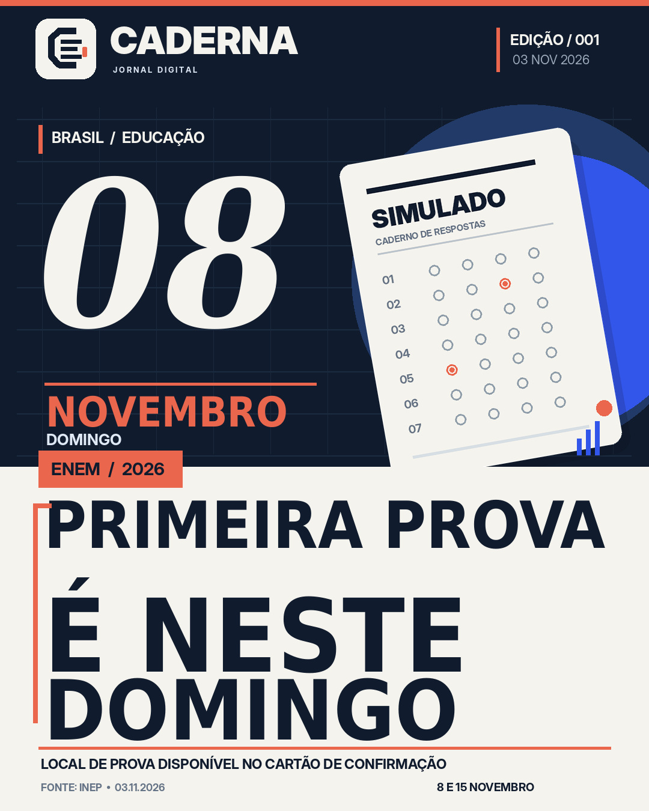

ENEM 2026:
primeira prova neste domingo
O exame está previsto para 8 e 15 de novembro. O Cartão de Confirmação com o local de prova está disponível na Página do Participante, segundo o Inep.

Arquivo de mídia
A versão JPEG foi preparada para a API oficial do Instagram, com margens e tipografia verificadas. Este acervo não é o feed do Instagram e disponibilizar o arquivo aqui não constitui publicação na rede social.
Baixar JPEG da capa